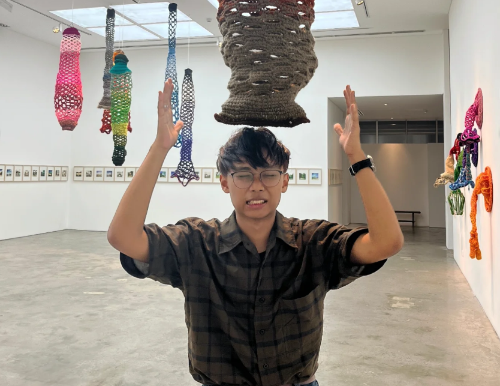

05 • 01 • 2005
🎉 Happy 21st Birthday, Doi! 🎂
Today is all about you ✨

9 Years, 9 Messages 💌
Final Note 🎀
Happy Birthday again, doi!
I wanna say thank you for everything, for always being there for me since SSC days.
I'm so grateful to have you in my life because you made me feel supported in a way that it became my foundation for meeting new friends.
To be honest, I don't really know what gift to give you kasi mas magaling ka talaga when it comes to gift giving XD
Still, I've decided to make a site instead and live hosted it in GitHub so you can always visit it as long as my account exists there.
I made 9 "Open When" messages because we've been friends for almost 9 years now. Ang bilis, ano? XD
I couldn't think of a physical gift to give you, but I want my gift to at least be memorable (I hope it is) so I used the most valuable thing I have, and that's time.
Since I'm in CompSci, why not make a site, 'di ba? I tried my best even though I'm super busy lately (lagi na lang leader T^T) but here ya go!
I hope this would at least make you smile. I honestly don't know whether you'll like it. I'm a sucker for handwritten notes but at least this thing is longer to keep, right?
Even if we've separated schools and universities, you're still the best friend that I have. If you ever need me, I'm still here, kahit we rarely see each other now.
I hope this year brings you more smiles,
unforgettable memories, and dreams coming true.
Never forget how special you are to the people around you.💕
P.S. Click the button below, there's 3 randomized stuff in there ^^